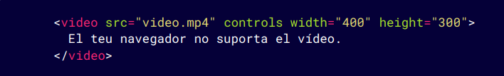
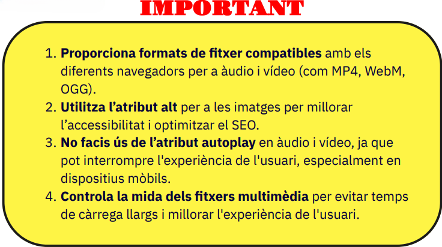

HTML5 revolucionó la integración multimedia en la web, permitiendo insertar imágenes, vídeos y audios de manera nativa, eficiente y sin depender de complementos externos (como el antiguo Flash). Esto mejoró enormemente la compatibilidad en todos los dispositivos, especialmente en móviles.
Tres etiquetas principales para integrar contenido multimedia:
<img>)
</img>).<img src="imatge.jpg" alt="Descripció de la imatge" width="300" height="200"><video>)
<video src="video.mp4" controls width="400" height="300">...</video>
<audio>)
<video>, pero está diseñado específicamente para insertar reproductores de sonido nativos.<audio src="audio.mp3" controls>...</audio>En las etiquetas de vídeo y audio, es buena práctica incluir un texto entre la apertura y el cierre —ej: "El teu navegador no suporta..."— que solo se mostrará si el navegador del usuario es muy antiguo y no puede cargar el reproductor.
